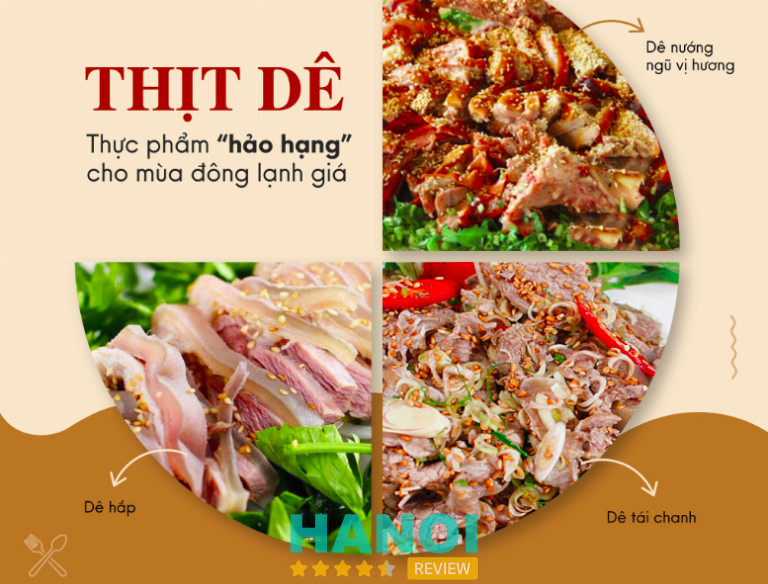
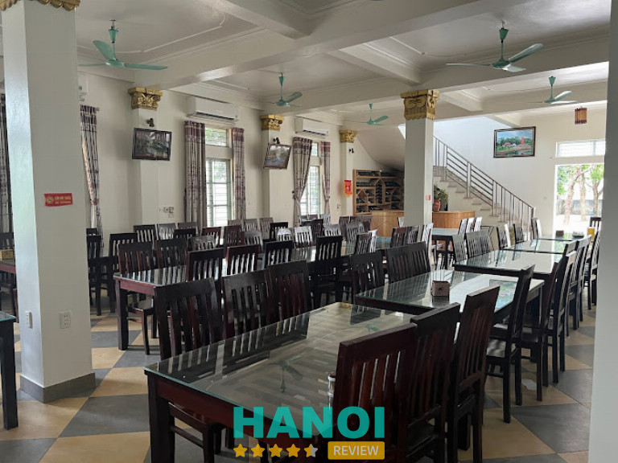
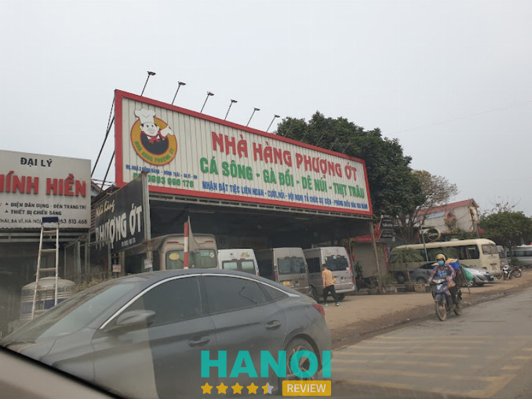
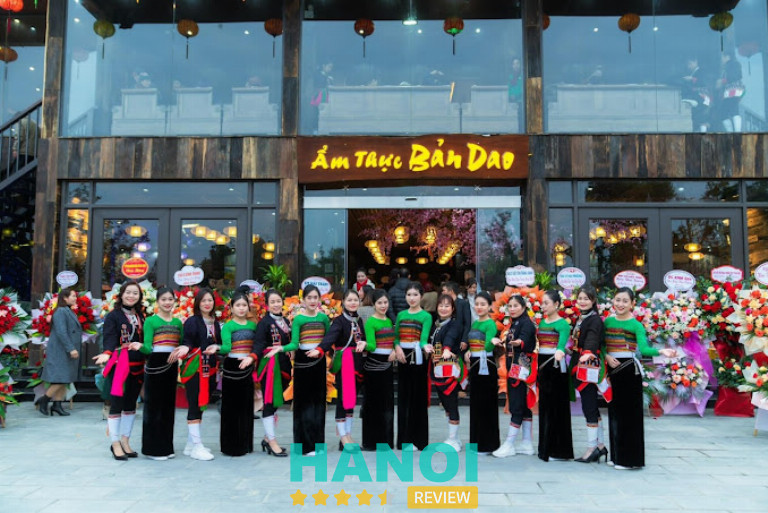
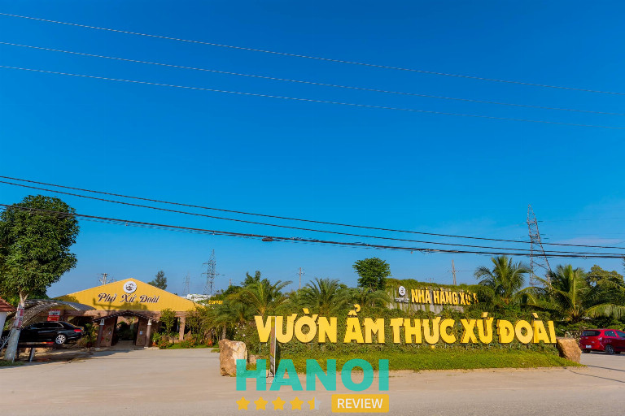
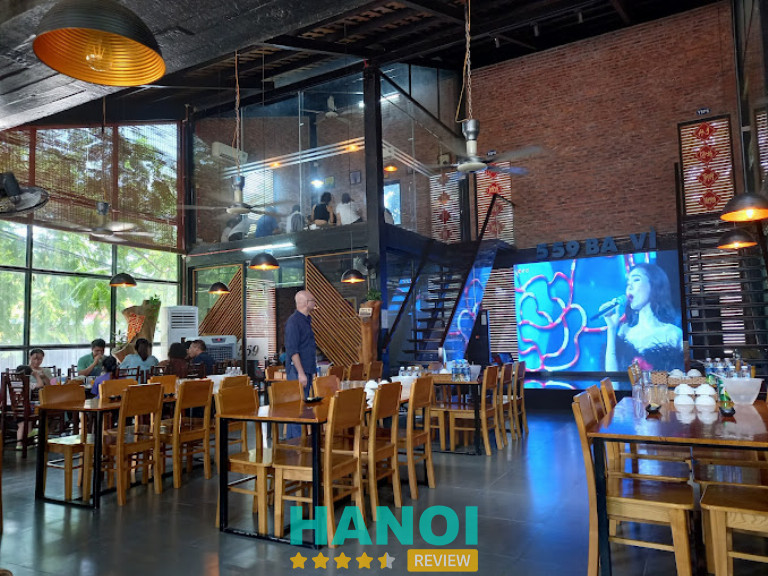
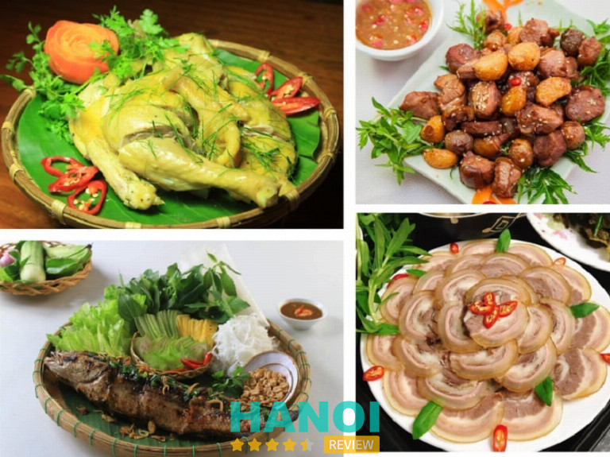

10 Nhà hàng, quán ăn ngon nổi tiếng tại H. Ba Vì nhiều đặc sản
Các nhà hàng và quán ăn ở huyện Ba Vì thường sử dụng nguồn nguyên liệu tươi sống phong phú từ vùng núi rừng, phản ánh sự phong phú của ẩm thực địa phương. Từ những món ăn dân dã đến các món ăn đặc sản phức tạp, Ba Vì có thể làm hài lòng mọi thực khách từ những người sành ăn đến các du khách tìm kiếm trải nghiệm mới lạ.
Top 10 Nhà hàng, quán ăn ngon nức tiếng ở Huyên Ba Vì
Không chỉ được biết đến với những cảnh quan thiên nhiên hùng vĩ, Huyện Ba Vì còn là thiên đường ẩm thực với những địa điểm ăn uống mang đậm hương vị địa phương. Sự kết hợp giữa nguồn nguyên liệu tươi ngon từ núi rừng và tay nghề điêu luyện của các đầu bếp đã tạo nên một bản sắc ẩm thực phong phú, đáng để khám phá.
Dưới đây là 10 nhà hàng, quán ăn chuyên các món đặc sản ngon nhất Ba Vì mà bạn nên lựa chọn khi có dịp ghé đến khu vực này:
Nhà Hàng Lá Cọ Ba Vì
Nhà Hàng Lá Cọ, nằm tại huyện Ba Vì có thâm niên gần 20 năm hoạt động. Nơi đây nổi tiếng là một trong những trung tâm tổ chức sự kiện và ăn uống uy tín hàng đầu. Sự kết hợp hoàn hảo giữa kiến trúc sang trọng và không gian xanh mát của thiên nhiên tạo nên một không gian lý tưởng cho mọi dịp tụ họp, từ bữa ăn gia đình cho đến các sự kiện quan trọng.
Thực đơn của Nhà Hàng Lá Cọ là sự phô diễn của ẩm thực đa dạng, với các món ăn được chế biến từ nguồn nguyên liệu sạch và chất lượng cao. Nhà hàng phục vụ đủ loại từ các món về nhím, lợn rừng đến cá lăng,… với nhiều cách chế biến khác nhau, đảm bảo mang lại hương vị tươi ngon, đậm đà. Đặc biệt, các món lợn rừng như lợn rừng hấp sả, lợn rừng nấu giả cầy, lợn rừng nướng than hoa là những lựa chọn không thể bỏ qua cho thực khách.

Nhà Hàng Lá Cọ còn chú trọng vào quy trình chế biến cầu kỳ để mỗi món ăn không chỉ đúng vị mà còn giữ được sự tinh tế trong từng chi tiết. Sự tươi ngon của nguyên liệu kết hợp với tay nghề điêu luyện của đầu bếp tạo nên những món ăn hấp dẫn, nóng hổi, phục vụ thực khách mỗi ngày.
Với không gian thanh lịch và phong cách phục vụ chuyên nghiệp, Nhà Hàng Lá Cọ Ba Vì là điểm đến không thể bỏ qua cho những ai yêu thích sự kết hợp giữa ẩm thực tinh tế và không gian xanh, tươi mát. Nhà hàng không chỉ là nơi để thưởng thức ẩm thực mà còn là địa điểm lý tưởng để tổ chức các sự kiện, tiệc tùng, mang đến trải nghiệm đáng nhớ cho mọi khách hàng.
Thông tin liên hệ:
- Địa chỉ: Cầu Và, Tân Lĩnh, Ba Vì, Hà Nội
- Điện thoại: 0934 186 868
- Email: lacobavi@gmail.com
- Website: nhahanglaco.vn
- Facebook: FB.com/NhaHangLaCo.Page
Tam Hương Restaurant
Nhà hàng Tam Hương được biết đến là một quán ăn ngon ở huyện Ba Vì, Hà Nội. Nơi đây mang đến trải nghiệm ẩm thực thú vị, phục vụ đủ các món ăn từ cơ bản cho đến đặc sản núi rừng. Nhà hàng có bãi đỗ xe rộng rãi và đa dạng các lựa chọn chỗ ngồi, bao gồm phòng ăn VIP và phòng ăn tập thể, là địa điểm lý tưởng cho cả những buổi tụ họp ấm cúng và các bữa tiệc nhóm lớn.
Thực đơn tại Tam Hương là minh chứng cho di sản ẩm thực phong phú của Việt Nam, với các món nướng đặc sắc như gà, cá và trâu. Cam kết về chất lượng được thể hiện rõ nét trong từng món ăn, đảm bảo một bữa ăn thỏa mãn cho mọi thực khách. Ngoài ra, lẩu cua, dê tái chanh và lợn hấp là những món ăn nổi bật hứa hẹn làm hài lòng vị giác của bạn.

Đối với những ai thích khám phá và muốn trải nghiệm những điều mới lạ, Tam Hương còn có thực đơn đặc biệt gồm bảy món làm từ thịt rắn. Món ăn độc đáo này hoàn hảo cho những thực khách muốn khám phá hương vị mới và trải nghiệm những khía cạnh ít được biết đến của ẩm thực Việt Nam. Mỗi món được chuẩn bị tỉ mỉ để làm nổi bật sự đa dạng của thịt rắn, kết hợp với các loại thảo mộc và gia vị địa phương để tăng thêm hương vị.
Đội ngũ nhân viên nhiệt tình của nhà hàng luôn sẵn sàng chào đón và phục vụ bạn một cách tận tâm cũng là điểm cộng tại nhà hàng này. Dù bạn là cư dân địa phương hay du khách thì Tam Hương cũng là lựa chọn lý tưởng để bạn ghé đến trải nghiệm ẩm thực.
Thông tin liên hệ:
- Địa chỉ: Yên Bài, Ba Vì, Hà Nội
- Điện thoại: 0979 404 996
- Email: nhahangtamhuong99@gmail.com
Nhà hàng Xạ Hương
Nhà hàng Xạ Hương, nằm trọn vẹn trong khuôn viên Ba Vì Resort ở Hà Nội, là một điểm đến không thể bỏ qua cho những ai yêu thích sự yên bình và gần gũi với thiên nhiên. Với thiết kế không gian mở, nhà hàng mang đến cho thực khách cái nhìn hùng vĩ ra hồ Suối Hai, Sông Đà, tạo nên một bức tranh sống động về sự giao hòa giữa trời và đất. Không gian này không chỉ thích hợp cho những bữa ăn gia đình mà còn là lựa chọn lý tưởng cho các sự kiện lớn với sức chứa lên đến 300 khách.
Nhà hàng Xạ Hương chuyên phục vụ các món ăn đặc sản dân tộc, đem đến cho thực khách trải nghiệm ẩm thực đặc sắc của vùng núi rừng Ba Vì. Mỗi món ăn tại đây là sự kết hợp tinh tế của hương vị truyền thống và kỹ thuật chế biến hiện đại, hứa hẹn sẽ làm hài lòng cả những vị khách khó tính nhất.
Nhà hàng được bao phủ bởi những tán cây Bách xanh tươi, tạo nên một không gian mát mẻ và thư giãn. Với hai tầng nhà sàn và khu vực ăn ngoài trời, không gian ăn uống tại Xạ Hương không chỉ lãng mạn mà còn vô cùng thư thái, lý tưởng để thưởng thức bữa ăn giữa làn gió tự nhiên và khung cảnh nên thơ của núi rừng.
Đội ngũ nhân viên tại Nhà hàng Xạ Hương luôn tận tâm và sẵn sàng chào đón khách hàng. Sự chu đáo và phục vụ hoàn hảo là những gì khách hàng có thể trông đợi mỗi khi ghé thăm. Nhà hàng không ngừng nỗ lực hoàn thiện mình để đáp ứng mọi nhu cầu của khách hàng, đảm bảo một trải nghiệm ẩm thực không chỉ ngon miệng mà còn đáng nhớ.
Thông tin liên hệ:
- Địa chỉ: Cốt 400, Vườn quốc gia Ba Vì, Hà Nội
- Điện thoại: 0979 688 556
Nhà Hàng Phượng Ớt
Trên đường di chuyển đến huyện Ba Vì, bạn chắc chắn sẽ tìm thấy Nhà Hàng Phượng Ớt bởi cơ sở nằm ngay quốc lộ 32. Nhà hàng này chuyên phục vụ các món ăn từ nguồn nguyên liệu tươi sống của vùng như cá sông, dê núi, gà đồi và thịt trâu, nhà hàng cam kết mang đến hương vị đậm đà và chân thực nhất.
Dịch vụ tại Nhà hàng Phượng Ớt luôn được đánh giá cao với đội ngũ nhân viên chuyên nghiệp và chu đáo. Từ phục vụ bàn cho đến các gợi ý về món ăn, mỗi nhân viên đều nỗ lực không ngừng để đảm bảo rằng khách hàng có được những trải nghiệm tuyệt vời nhất.

Nhà hàng Phượng Ớt không chỉ là nơi dành cho những bữa ăn gia đình hay cuộc hẹn hai người, mà còn là địa điểm lý tưởng để tổ chức các sự kiện lớn như tiệc, hội nghị, lễ cưới. Với không gian rộng lớn và khả năng phục vụ lên đến hàng trăm thực khách, nhà hàng có thể dễ dàng thích ứng với mọi yêu cầu từ khách hàng, dù là sự kiện ngoài trời hay trong nhà, mang đến không khí ấm cúng và trang nhã.
Bên cạnh đó, Nhà hàng Phượng Ớt cũng là sự lựa chọn hàng đầu cho các đoàn du lịch đến tham quan Ba Vì. Nhờ vào khả năng phục vụ linh hoạt và chuyên nghiệp, nhà hàng có thể đáp ứng nhu cầu của các đoàn khách lớn, đảm bảo mọi người đều có được trải nghiệm ẩm thực thú vị và thoải mái nhất.
Thông tin liên hệ:
- Địa chỉ: QL32, Đồng Thái, Ba Vì, Hà Nội
- Điện thoại: 0983 996 178
- Facebook: FB.com/100054382667700
Nhà Hàng Hiền Đạt
Nhà hàng Hiền Đạt, tọa lạc tại Thôn 8, Ba Trại, Ba Vì, Hà Nội, là điểm đến lý tưởng cho những ai đang tìm kiếm một không gian ẩm thực sang trọng và lịch sự để tổ chức các sự kiện, từ tiệc đối tác đến gặp mặt bạn bè và đồng nghiệp. Với không gian được thiết kế tinh tế, Hiền Đạt cung cấp một bầu không khí ấm cúng và thân mật, phù hợp cho mọi dịp quan trọng.
Nhà hàng nổi bật với thực đơn phong phú, từ những món ăn dân dã đồng quê đến các món đặc sản cao cấp như dê núi, chim trời, lợn bản, gà ri. Mỗi món ăn tại Hiền Đạt đều được chuẩn bị cẩn thận và phục vụ với chất lượng tốt nhất, đảm bảo hương vị thơm ngon, chuẩn vị địa phương, làm hài lòng cả những thực khách khó tính nhất.
Không chỉ nổi tiếng với ẩm thực đặc sắc, Hiền Đạt còn là địa điểm lý tưởng để tổ chức các sự kiện lớn như tiệc cưới, tour du lịch, tiệc thôi nôi,… Nhà hàng có khả năng phục vụ số lượng lớn khách, từ họp lớp cho đến tiệc công ty và các đoàn thể, với dịch vụ phục vụ chuyên nghiệp, nhiệt tình.
Nhà hàng Hiền Đạt không chỉ là nơi để thưởng thức những món ăn ngon mà còn là nơi tạo nên những phút giây quây quần bên nhau, đáng nhớ. Với cam kết về chất lượng dịch vụ và món ăn, cùng không gian đẹp, thoải mái, Hiền Đạt tự hào là địa điểm hoàn hảo để tổ chức mọi sự kiện, mang đến trải nghiệm không thể quên cho mọi khách hàng.
Thông tin liên hệ:
- Địa chỉ: Thôn 8, Ba Trại, Ba Vì, Hà Nội
- Điện thoại: 034 405 8888
- Facebook: FB.com/100085683637009
Nhà hàng Oanh Thám
Nhà hàng Oanh Thám hoạt động từ năm 2000, đây là quán ăn quen thuộc với nhiều người dân sính sống tại huyện Ba Vì. Được biết đến với sự chuyên nghiệp trong việc phục vụ các món ăn dân tộc và đặc sản từ Sông – Núi – Biển, nhà hàng mang đến cho thực khách những trải nghiệm ẩm thực độc đáo và đa dạng, phù hợp với cả khách lẻ lẫn khách đoàn.
Không gian rộng rãi của Nhà hàng Oanh Thám là điểm cộng lớn, cho phép phục vụ hiệu quả các đoàn khách lớn, từ những buổi họp mặt gia đình đến các sự kiện doanh nghiệp. Với thiết kế thoáng đãng, nhà hàng còn mang đến cảm giác gần gũi với thiên nhiên, đặc biệt là với khung cảnh đồi núi bao quanh, làm tăng thêm phần thú vị cho bữa ăn.
Thực đơn tại Nhà hàng Oanh Thám là sự kết hợp của nghệ thuật ẩm thực truyền thống và kỹ thuật chế biến hiện đại. Các món ăn như Gà đồi, Bò, Bê, Đà Điểu và các loại cá Sông, cá Suối không chỉ được chế biến bởi các đầu bếp giàu kinh nghiệm mà còn được tuyển chọn kỹ lưỡng từ nguồn nguyên liệu tươi sống, đảm bảo chất lượng và hương vị tuyệt hảo.
Bên cạnh các món ăn thịt, Nhà hàng Oanh Thám còn phục vụ các món rau sạch được trồng trực tiếp tại vùng đồi núi Ba Vì. Sự trong lành và tinh khiết của rau củ không chỉ góp phần làm nổi bật hương vị các món ăn mà còn đảm bảo sức khỏe cho thực khách. Nhà hàng tự hào mang đến cho khách hàng một bữa ăn không chỉ ngon miệng mà còn bổ dưỡng, phản ánh sự tinh tế và chu đáo trong từng món ăn.
Thông tin liên hệ:
- Địa chỉ: Km10 Đường 414, Chợ tản Lĩnh, Ba Vì, Hà Nội
- Điện thoại: 0948 168 971
Xem thêm: 10 Nhà hàng tại Hà Nội ngon nổi tiếng, dịch vụ tốt nhất
Nhà Hàng Bản Dao
Nhà hàng Bản Dao, nổi tiếng là một quán ăn chuyên các món ẩm thực đặc sản tại huyện Ba Vì. Đây là lựa chọn không thể bỏ qua những ai muốn trải nghiệm hương vị đặc trưng núi rừng. Nhà hàng này chuyên phục vụ các món ăn dân tộc, bao gồm các đặc sản từ thịt nhím, lợn rừng, cá sông Đà, cũng như các món rau sạch trồng tại chỗ, mang đến cho thực khách những bữa ăn không chỉ ngon miệng mà còn bổ dưỡng.
Tại Nhà hàng Bản Dao, không gian được thiết kế rộng rãi và thoáng đãng, với một vườn rau xanh mướt ngay tại nhà hàng, đảm bảo sự tươi mới, chất lượng của nguyên liệu. Điều này không chỉ thu hút khách hàng bởi hương vị thực sự của thực phẩm mà còn bởi cam kết về một lối sống lành mạnh và bền vững.

Đội ngũ nhân viên tại Nhà hàng Bản Dao được khách hàng yêu mến bởi sự nhiệt tình và chu đáo. Họ luôn sẵn sàng phục vụ, đáp ứng mọi yêu cầu của khách, từ việc giới thiệu món ăn đến chia sẻ thông tin về nguồn gốc và cách chế biến các món ăn, nhằm mang đến cho thực khách trải nghiệm ẩm thực tuyệt vời nhất.
Khách hàng khi đến với nhà hàng Bản Dao không chỉ được thưởng thức những món ăn ngon mà còn được hòa mình vào không khí của một cộng đồng thân thiện và mến khách. Sự kết hợp giữa ẩm thực địa phương và dịch vụ chuyên nghiệp làm cho Nhà hàng Bản Dao trở thành điểm đến yêu thích của cả khách du lịch và người dân địa phương.
Thông tin liên hệ:
- Địa chỉ: Thôn 8, Ba Trại, Ba Vì, Hà Nội
- Điện thoại: 0973 457 582
Vườn Ẩm Thực Xứ Đoài
Nhà hàng Ẩm Thực Xứ Đoài, tọa lạc tại Ba Vì, là một quán ăn ngon nức tiếng tại khu vực. Với thực đơn phong phú, nhà hàng nổi tiếng với các món ăn được chế biến từ nguyên liệu tươi ngon và sạch sẽ, đảm bảo mang lại trải nghiệm ẩm thực thú vị cho mọi thực khách.
Một trong những món ăn đặc biệt tại Ẩm Thực Xứ Đoài là bồ câu quay và Đà Điểu Sào Lúc Lắc, hai món ăn không chỉ ngon miệng mà còn được trình bày một cách bắt mắt, thu hút thực khách ngay từ cái nhìn đầu tiên. Ngoài ra, Cá Lăng Đủ Món cũng là một lựa chọn không thể bỏ qua, với cách chế biến đa dạng, mỗi món ăn đều toát lên hương vị đặc trưng riêng biệt.

Không gian của Nhà hàng Ẩm Thực Xứ Đoài rộng rãi và thoáng đãng, tạo cảm giác thoải mái, dễ chịu cho khách hàng khi thưởng thức bữa ăn. Điều này, cùng với đội ngũ nhân viên nhiệt tình và chu đáo, làm nên sự khác biệt của nhà hàng so với các địa điểm khác.
Về mặt giá cả, Ẩm Thực Xứ Đoài luôn cố gắng đảm bảo sự cân bằng, với mức giá hợp lý phù hợp với chất lượng món ăn và dịch vụ được cung cấp. Đây chắc chắn là điểm đến lý tưởng cho những ai yêu thích ẩm thực và muốn tìm hiểu sâu hơn về văn hoá ẩm thực của Ba Vì.
Thông tin liên hệ:
- Địa chỉ: Thôn Đức Thịnh, Tản Lĩnh, Ba Vì, Hà Nội
- Điện thoại: 088 814 1984
- Email: amthucxudoai1984@gmail.com
- Facebook: FB.com/vuonamthucxudoai
Nhà hàng 559
Nhà hàng 559 với thiết kế hiện đại và sang trọng, đã trở thành một điểm đến ẩm thực nổi tiếng tại Ba Vì, thu hút đông đảo khách du lịch. Nhà hàng này không chỉ nổi bật bởi vị trí thuận tiện, dễ tìm mà còn bởi không gian ấm cúng, món ăn chất lượng cao, đặc biệt là các món từ thịt trâu và hải sản như lẩu cua.
Nhà hàng 559 là nơi quy tụ của những đầu bếp giàu kinh nghiệm, nơi các món ăn được chế biến tỉ mỉ để giữ nguyên giá trị dinh dưỡng và hương vị tinh túy. Thực đơn đa dạng về cách chế biến, từ nướng đến hấp, từ nhúng đến lẩu, mỗi món ăn đều mang đậm dấu ấn đặc trưng chỉ có tại nhà hàng này.

Do sự nổi tiếng và chất lượng dịch vụ cao, nhà hàng 559 thường xuyên đông khách, đặc biệt là vào những dịp cao điểm. Khách hàng thường là các tài xế và hướng dẫn viên du lịch. Vì vậy, nếu muốn ghé ăn uống tại nhà hàng này, bạn nên đặt bàn trước để tránh phải chờ đợi.
Đến với Nhà hàng 559, thực khách không chỉ được thưởng thức những món ăn ngon mà còn được hòa mình vào không khí nông trại thư thái, hiện đại. Sự kết hợp giữa không gian đẹp, món ăn tuyệt vời và dịch vụ chuyên nghiệp khiến Nhà hàng 559 trở thành một trong những địa chỉ ẩm thực không thể bỏ qua tại Ba Vì.
Thông tin liên hệ:
- Địa chỉ: Vân Hoà, Ba Vì, Hà Nội
- Điện thoại: 0985 672 328
- Facebook: FB.com/garibavi559
Nhà hàng Tư Lùn
Nhà hàng Tư Lùn nổi tiếng ở Ba Vì là một trong những quán ăn đặc sản ngon nhất khu vực. Với không gian rộng rãi và mát mẻ, nhà hàng là địa điểm lý tưởng cho các sự kiện quan trọng như tiệc cưới, liên hoan, tiệc sinh nhật, mang đến cho khách hàng không chỉ bữa tiệc ngon miệng mà còn trải nghiệm tuyệt vời.
Chuyên về các món ăn từ gà, bò, tôm, lẩu riêu cua, Nhà hàng Tư Lùn cung cấp một thực đơn phong phú, hợp với mọi khẩu vị từ bình dân đến cao cấp. Mỗi món ăn tại đây đều được chế biến từ nguyên liệu tươi ngon, sạch sẽ, được cung cấp trực tiếp từ các trang trại địa phương, đảm bảo không sử dụng chất bảo quản, nhằm mang đến cho thực khách những món ăn bổ dưỡng và an toàn.

Nhà hàng Tư Lùn nổi tiếng với chất lượng phục vụ xuất sắc. Đội ngũ nhân viên trẻ trung, tận tình và chu đáo luôn sẵn sàng đáp ứng mọi nhu cầu của khách hàng, từ việc tư vấn lựa chọn món ăn cho đến việc phục vụ tại bàn, đảm bảo một trải nghiệm ẩm thực hoàn hảo cho mỗi vị khách.
Với sự kết hợp giữa thực đơn đa dạng, chất lượng thực phẩm tươi sạch cùng dịch vụ chuyên nghiệp, Nhà hàng Tư Lùn xứng đáng là điểm đến ẩm thực lý tưởng cho bất kỳ ai muốn khám phá hương vị đặc trưng của Ba Vì cùng người thân, bạn bè và đồng nghiệp. Nhà hàng không chỉ là nơi ăn uống mà còn là không gian để tạo dựng kỷ niệm đẹp bên những người thân yêu.
Thông tin liên hệ:
- Địa chỉ: 03 Cổng Ải, Tây Đằng, Ba Vì, Hà Nội
- Điện thoại: 024 3386 3198
6 kinh nghiệm chọn nhà hàng, quán ăn ngon tại huyện Ba Vì, Hà Nội
Khi du lịch đến huyện Ba Vì, Hà Nội, việc tìm kiếm một nhà hàng hay quán ăn ngon để trải nghiệm ẩm thực địa phương không chỉ giúp bạn thỏa mãn vị giác mà còn là cơ hội để hiểu hơn về văn hóa và phong tục tại đây. Để chọn được nhà hàng ưng ý, bạn cần lưu ý một số kinh nghiệm quan trọng sau đây:
- Đánh giá trực tuyến: Trước khi quyết định đến một nhà hàng, hãy tham khảo ý kiến từ người thân hoặc review từ các trang tin di lịch. Những đánh giá này thường cung cấp cái nhìn toàn diện về chất lượng món ăn, dịch vụ và không gian của nhà hàng.
- Nguyên liệu địa phương: Chọn nhà hàng sử dụng nguyên liệu tươi sống từ địa phương sẽ đảm bảo bạn có trải nghiệm ẩm thực thật sự tươi ngon và độc đáo.
- Không gian nhà hàng: Tùy thuộc vào mục đích của bữa ăn, bạn có thể lựa chọn các nhà hàng với không gian mở trong lành phù hợp cho các buổi picnic hoặc những nhà hàng có không gian kín đáo, lãng mạn hơn cho các dịp đặc biệt.
- Thực đơn đa dạng: Nếu đi cùng gia đình hay bạn bè với nhiều sở thích khác nhau, một thực đơn đa dạng sẽ là lựa chọn tốt để đáp ứng nhu cầu của tất cả mọi người.
- Dịch vụ khách hàng: Một nhà hàng tốt không chỉ có thức ăn ngon mà còn phải có dịch vụ khách hàng tốt. Sự nhiệt tình và chu đáo từ nhân viên sẽ góp phần làm cho bữa ăn của bạn trở nên trọn vẹn hơn.
- Giá cả hợp lý: Giá cả phải chăng luôn là một yếu tố quan trọng khi lựa chọn nhà hàng, nhất là khi bạn có kế hoạch sử dụng bữa ăn ở đó nhiều lần trong chuyến đi.
- Vị trí thuận tiện: Chọn nhà hàng ở vị trí dễ tìm, thuận tiện cho việc di chuyển sẽ giúp bạn tiết kiệm thời gian và công sức, đặc biệt nếu bạn không quen với khu vực.
Những nhà hàng, quán ăn tại Ba Vì là nơi để du khách thấm đẫm tinh hoa ẩm thực và văn hóa của vùng đất này. Hy vọng rằng, danh sách này sẽ là nguồn cảm hứng để bạn khám phá và tận hưởng hương vị ẩm thực đích thực của vùng đất Ba Vì.
Có thể bạn quan tâm
- 3 Trung tâm dạy Tiếng Anh tại huyện Ba Vì uy tín, chất lượng
- 5 Nhà hàng tiệc cưới cao cấp tại Hà Nội sang trọng, đẳng cấp nhất
- 5 Nhà hàng rượu vang tại Hà Nội nổi tiếng sang trọng nhất
DOANH NGHIỆP: Đăng tải thông tin MIỄN PHÍ.
Bình luận (2)
Tin đọc nhiều


Đò ăn dở cơm nhão nguội chặt chém quá ghê
Dạ, anh cung cấp thêm thông tin về Quán và món ăn anh ko hài lòng giúp bên em đăng tải thông tin thêm được minh bạch hơn ạ !